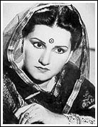

आज मल्लिका ए तरन्नुम नूरजहां का जन्म दिन है। अपने जीवन के २१वें साल में नूरजहाँ ने भारत और हिन्दी फिल्में छोड़ दी और बँटवारे की वजह से पाकिस्तान चली गई। पाकिस्तान में भी उन्होने कई फिल्मों में काम किया, बहुत गाया पर मेरे मन में एक टीस है कि काश नूरजहां भारत में होती तो हमारे पास दो दो अनमोल रत्न होते। लता जी और नूरजहाँ।लता मंगेशकर भी नूरजहाँ को अपना गुरु मानती हैं। आईये नूरजहाँ के स्वर में दो बढ़िया गीत सुनते हैं। पहला एक शास्त्रीय आलाप है। नूरजहाँ ने इस में सलामत अली खाँ साहब के साथ जुगलबंदी की है। यह कौनसा राग है हमें नहीं पता, शायद पारुलजी या मानोशीजी कुछ मदद कर सकें।
External player or recording not archived. Original media link
External player or recording not archived. Original media link
Download Linkऔर इस दूसरे गीत को नूरजहाँ ने अपनी बुलंद आवाज में गाया है। यह फिल्म बड़ी माँ से है। यह गीत ज़िया सरहदी ने लिखा और संगीतबद्ध किया दत्ता कोरेगाँवकर (के. दत्ता) ने।
External player or recording not archived. Original media link
Download Linkआ इंतज़ार है तेरा, दिल बेक़रार है मेरा
आजा न सता और, आजा न रुला
और आजा कि तू ही है मेरी उम्मीद का तारा
उम्मीद का तारा संगम
मेरी ख़ुशियों का निगाहों का सहारा
आ इंतज़ार है तेरा, दिल बेक़रार है
मेरा आकर मेरी जागी हुई रातों को सुला दे
खो जाऊँ, खो जाऊँ मुझे ऐसा कोई गीत सुना दे
आ इंतज़ार है तेरा, दिल बेक़रार है मेरा
अब और सितम, अब और सितम हम से उठाए नहीं जाते
और राज़ मोहब्बत के, और राज़ मोहब्बत के छुपाए नहीं जाते
छुपाये नहीं जाते
आ इंतज़ार है तेरा, दिल बेक़रार है मेरा
अभी पता नहीं कितने ऐसे संगीतकार हैं जिन्होने इतने बढ़िया गीत रचे और हमें उनके नाम तक नहीं पता। भविष्य में ऐसे ही और संगीतकारों के गीत महफिल में सुनाये जायेंगे।